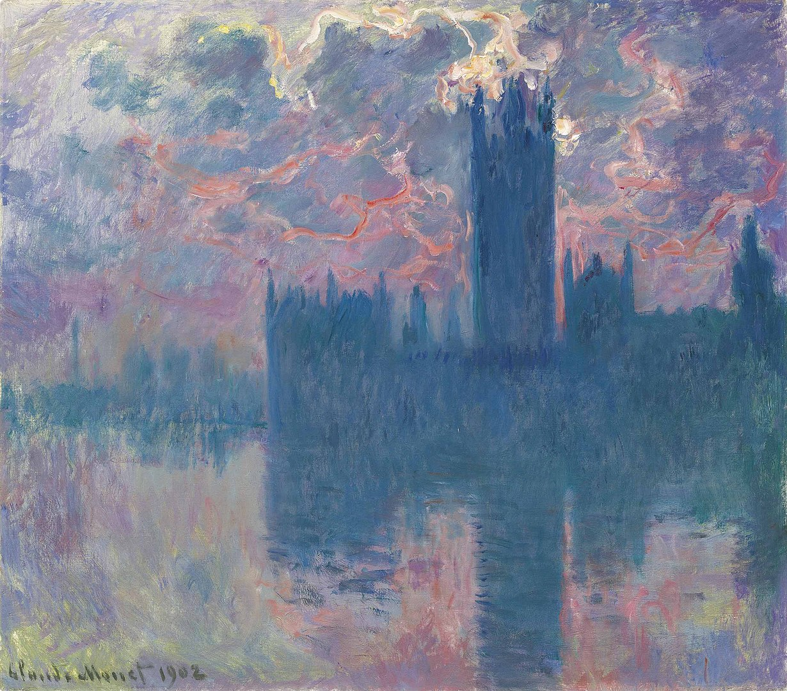
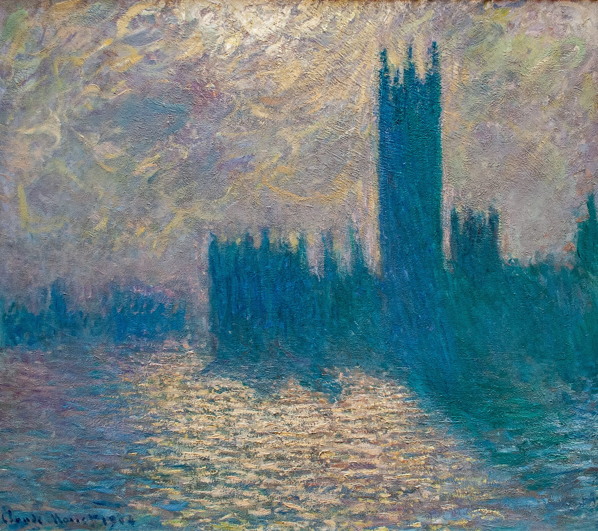
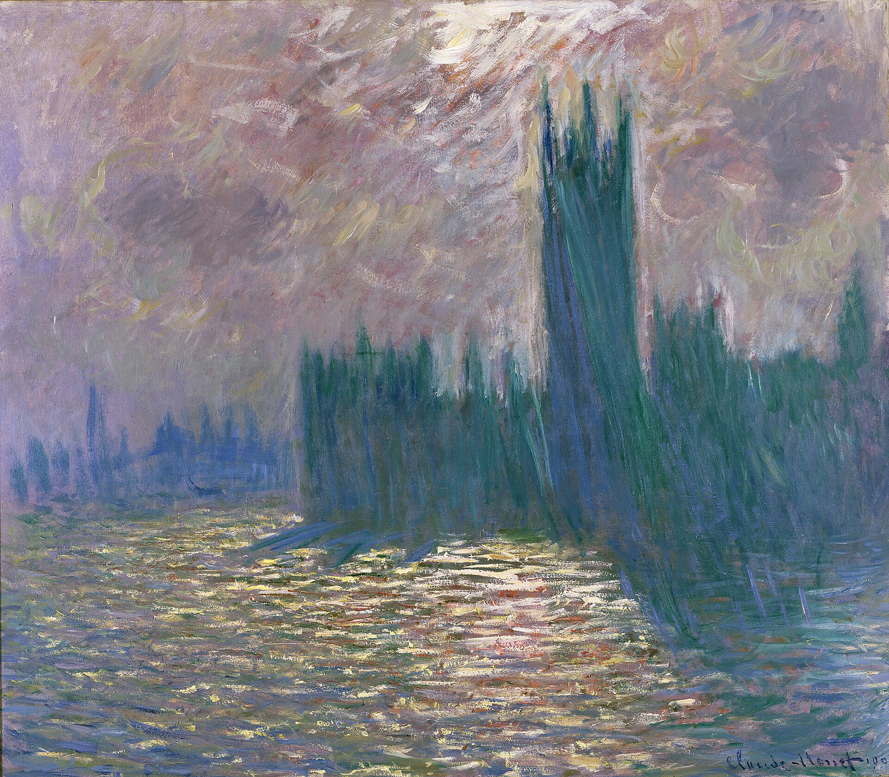
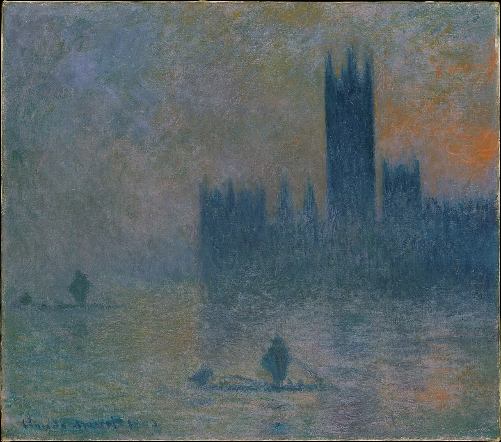
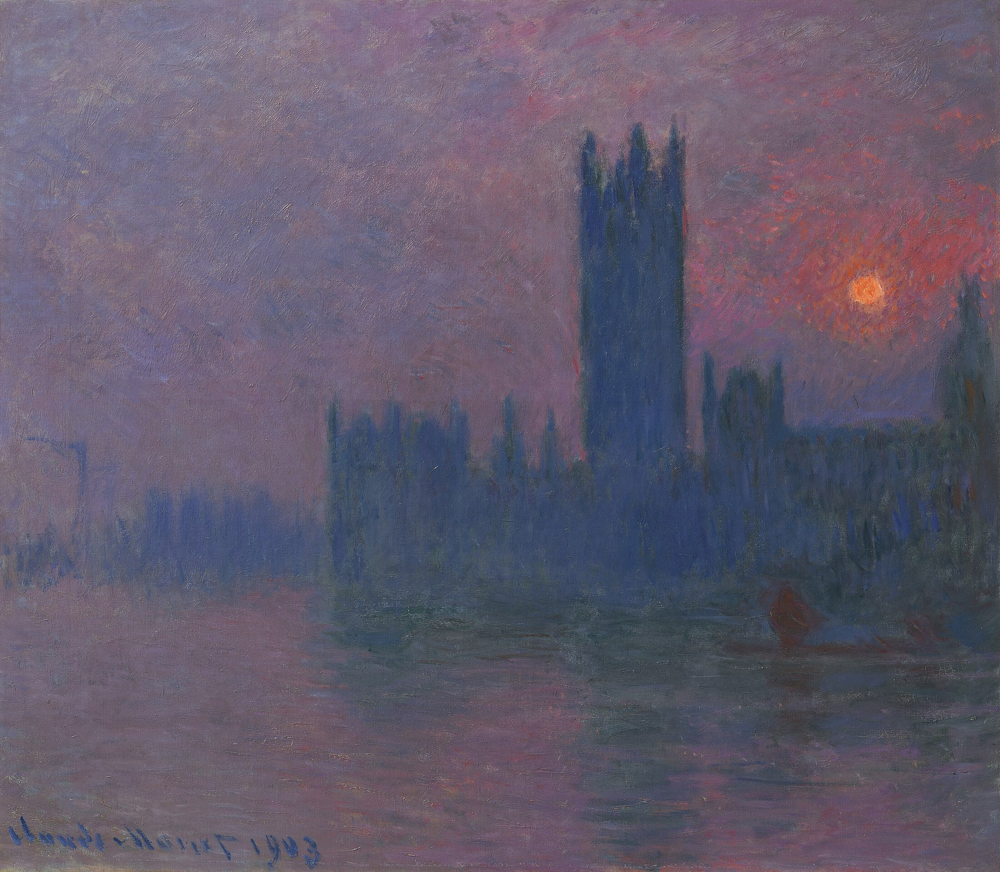

9
Houses of Parliament
“
Color is my daylong obsession, joy, and torment.
———— Claude Monet
”
Hover to view the whole painting

Houses of Parliament, London
1990-1991
The Art Institute of Chicago
Chicago, United States

Houses of Parliament in the Fog
1903
High Museum of Art
Atlanta, United States
_1903_Brooklyn.png)
Houses of Parliament, Sunlight Effect (Le Parlement, effet de soleil)
1903
Brooklyn Museum
New York City, United States

The Houses of Parliament, Seagulls
1903
Princeton University Art Museum
Princeton, United States

Houses of Parliament, London
1904
The Kunsthaus Zürich
Zürich, Switzerland

Parlement, coucher du soleil (sunset)
1902
Private Collection
N/A

Houses of Parliament, stormy sky
1904
Lille Palace of Fine Arts
Lille, France

Houses of Parliament, London
1905
Marmottan Museum of Monet
Paris, France

London Parliament
1903
MuMa - Musée d'art moderne André Malraux
Le Havre, France

The Houses of Parliament (Effect of Fog)
1903-1904
Metropolitan Museum of Art
New York City, United States

Houses of Parliament, Sunset
1900-1903
Museum Barberini - Hasso Plattner Collection
Potsdam, Germany